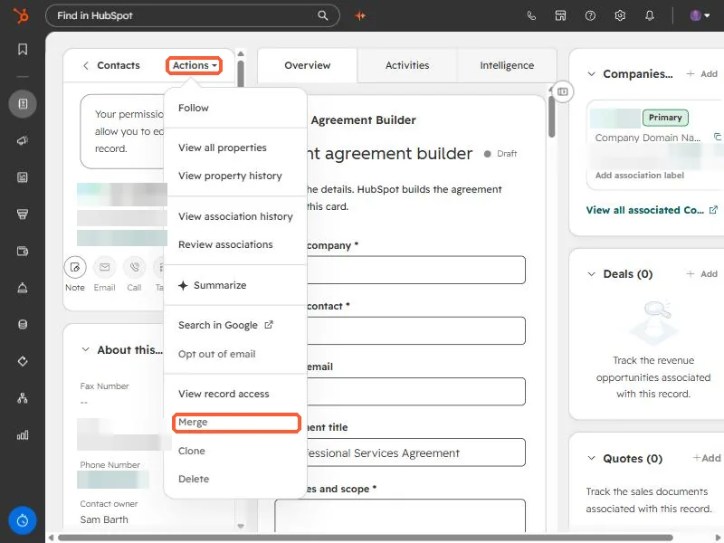

Short answer
The CRM API creates whatever you send. Companies are not deduplicated by domain on API create, so a script that retries or runs twice produces duplicates. Clean up with HubSpot's merge endpoint, not delete, because merge keeps the associations, activities, and history from both records. Then change the script to search first or to upsert on a unique property.
1. How the duplicates happen
While loading company lists into a portal for a project of mine, a bulk write I ran created duplicate companies. Two things combined: the script was run in more than one phase, and the API does not enforce uniqueness on company domain. HubSpot's own guidance says the same about imports: only a unique identifier matches records. See import created duplicates for that side.
You can merge a pair by hand in the portal. Open a record and the same Actions menu that offers Opt out of email also offers Merge.


2. Merge, do not delete
When the duplicates number in the dozens or more, merge from the script. I chose merge over delete because merging keeps associations from both records. Deleting the extra loses whatever was attached to it. The endpoint takes the record to keep and the record to fold in:
POST https://api.hubapi.com/crm/v3/objects/companies/merge
{
"primaryObjectId": "PRIMARY_ID",
"objectIdToMerge": "DUPLICATE_ID"
}Contacts use the same shape at /crm/v3/objects/contacts/merge. Merging is permanent, so dry-run first: write the pairs to a file, review a sample, then run.
3. Stop it recurring
- Search before create. Query by domain (companies) or email (contacts) and create only on zero hits.
- Upsert on a unique property. Where an object has a unique property, batch upsert with
idPropertyupdates instead of creating. - Make runs idempotent. Log the IDs your script creates so a re-run reads them instead of creating again.
- Check counts after every batch. I verify the total against what I expected, which is how the duplicate defect showed up.